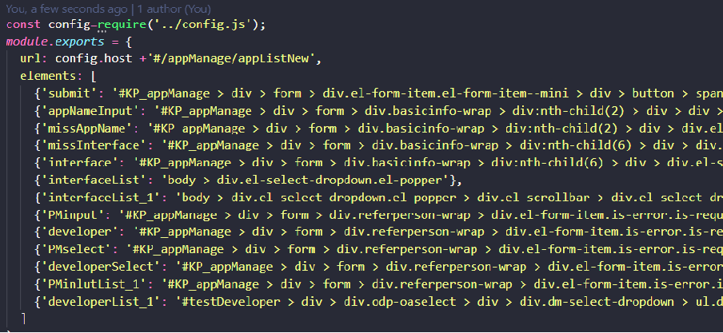

原文连接:https://www.cnblogs.com/wheatCatcher/p/11342821.html
背景：
前端页面模拟仿真操作，目的是避免每次更新相关内容重复之前的测试操作，减少不必要的时间投入，以及校验功能的可用性。但是目前元素定位是个问题（每次页面有修改都要重设某些元素定位）
使用Nightwatch进行E2E测试

E2E测试
不同于行为驱动测试（BDD）和单元测试独立运行并使用模拟/存根，端到端测试将试着尽可能从用户的视角，对真实系统的访问行为进行仿真。对Web应用来说，这意味着需要打开浏览器、加载页面、运行JavaScript，以及进行与DOM交互等操作。
然而，项目在快速迭代中不可避免的要进行一遍又一遍测试，费时又费力，而且极有可能因人工失误忽略某些环节。再者，怎么能容忍一次搞定的事非要多次重复呢？不能忍啊。万能的程序员们总会有办法解决如此循环往复的重复性工作，于是，三年前的某个月黑风高的夜晚，Nightwatch诞生了（虽然这货最新的release版本是五天之前的v0.9.14）。
Nightwatch 简介
Nightwatch.js是一个基于Node.js的端到端(e2e)测试方案，使用W3C WebDriver API，将Web应用测试自动化。它提供了简单的语法，支持使用JavaScript和CSS选择器，来编写运行在Selenium服务器上的端到端测试。
Selenium相当于一个自动化的浏览器，是用于Web应用程序测试的工具。Selenium测试直接运行在浏览器中，就像真正的用户在操作一样。支持的浏览器包括IE、Mozilla Firefox、Mozilla Suite等（其实Selenium就是一个jar包）
目前，Selenium是JavaScript的世界里验收测试方面最流行的工具之一，类似的还有PhantomJS。二者都有其独到的方法：Selenium使用其WebDriver API，而PhantomJS使用无界面的WebKit浏览器。它们都是非常成熟的工具，都具有强大的社区支持。它们与Nightwatch之间最大的不同，主要是在于语法的简易度以及对持续集成的支持。与Nightwatch相比，Selenium和PhantomJS都拥有更加冗长的语法，这会让编码变得更庞大，而且不支持从命令行中进行开箱即用的持续集成（JUnit XML或其他标准输出）。
p.s. Selenium和PhantomJS都是可以单独作为一种测试方案，Nightwatch是基于Selenium的一种更简洁的测试方案。
p.s. WebDriver目前已经是W3C的一个规范，旨在规范浏览器的自动化行为
p.s. 我是咋知道有这么个东西的？其实是Vue全家桶里给带的。
Nightwatch工作时时依托于一套基于HTTP的REST API，只不过Server端不是传统意义上的后端，而是WebDriver的服务器（Selenium）,这套REST API是基于W3C WebDriver API的。
就像这样：

大部分的情况下，Nightwatch执行一条命令或者断言回响WebDriver发送两个请求，第一个请求用来获取到CSS或XPath选择器选中的那个element节点，第二个请求用来发送这条命令或者断言。
Nightwatch的主要特点
- 语法简洁干净
- 支持CSS选择器和XPath选择器，只要编写的测试用例符合规范，就无须再初始化其他对象和类。
- 内置命令行测试运行器，可以按组或单个运行测试。
- 可以持续集成
- 易扩展
在项目中使用Nightwatch
先贴一个例子【这是用来测kz-fe中node-arch的首页的一个用例片段】
'default tests': function (browser) {
const devServer = browser.globals.devServerURL;
browser
.url(devServer)
.waitForElementVisible('body', 2000)
.assert.attributeContains('body', 'class', 'directory')
.assert.elementPresent('input')
.assert.attributeEquals('#search', 'placeholder', 'Search')
.assert.cssProperty('#search', 'position', 'fixed')
.assert.elementPresent('#wrapper')
.end()
}在项目中使用Nightwatch需要安装三个npm包：
- chromedrive
- nightwatch
- selenium-server
然后需要一个配置文件：
{
"src_folders": ["test/e2e/specs"], // 放测试用例
"output_folder": "test/e2e/reports", // 放测试报告
"selenium" : {
"start_process" : true,
"server_path": "node_modules/selenium-server/lib/runner/selenium-server-standalone-3.3.1.jar",
"host": "127.0.0.1",
"log_path" : "",
"port" : 4444,
"cli_args" : {
"webdriver.chrome.driver" : ""
}
},
"test_settings" : {
"default" : {
"launch_url" : "http://localhost",
"selenium_port" : 4444,
"selenium_host" : "localhost",
"silent": true,
"globals": {
"devServerURL": "http://localhost:8080"
}
},
"chrome" : {
"desiredCapabilities": {
"browserName": "chrome",
"javascriptEnabled": true
}
},
"edge" : {
xxxx略
}
}
}
}然后就可以愉快地写测试用例了。
Nightwatch API
Nightwatch API分为四个部分，分别是Expect、Assert、Commands、WebDriver Protocol
Expect
Expect是0.7版本的时候引入的一种BDD（行为驱动测试）风格的接口，也是为了执行断言，使用链式的语法，和直接的断言相比，expect读起来更加语义化，就像写句子（但是单词之间用的.连接的）
this.demoTest = function (browser) {
browser.expect.element('#main').to.be.present;
browser.expect.element('#main').to.be.visible;
browser.expect.element('#main').to.have.css('display').which.does.not.equal('block');
browser.expect.element('#q').to.be.an('input');
browser.expect.element('body').to.not.have.attribute('data-attr');
};Expect提供的语言连词不直接进行断言（真正的断言是末尾的那个词），可以随意组合，顺序不影响结果。
to 、be 、been 、is 、that、which、and、has、have、with、at、does
Assert
Assert这部分包含两套有同样方法的方法库：assert和verify,其中，若是当前执行的断言没有成功，assert会停止执行剩余的断言并立即结束，verify会打印错误日志然后继续淡定的执行接下来的断言。
browser
.url(devServer)
.waitForElementVisible('body', 2000)
.assert.attributeContains('body', 'class', 'directory') // 属性值
.assert.elementPresent('input') // 有当前元素
.assert.attributeEquals('#search', 'placeholder', 'Search') // 属性值
.assert.cssProperty('#search', 'position', 'fixed') // CSS属性值
.assert.elementPresent('#wrapper')
.end()Commands用来在页面上执行一些命令比如点击、关掉当前窗口、清除cookie、获取到某元素的值等。
this.demoTest = function (browser) {
browser.click("#main ul li a.first", function(response) {
this.assert.ok(browser === this, "Check if the context is right.");
this.assert.ok(typeof response == "object", "We got a response object.");
});
browser.clearValue('input[type=text]');
browser.pause(1000);
browser.saveScreenshot('/path/to/fileName.png');
browser.closeWindow();
};测试分类：
一.单元测试：站在程序员的角度测试；
1、减少开发人员的重复测试时间 2、面向程序的功能模块的测试
二.端对端测试：站在测试人员的角度测试
1、减少测试人员的重复测试时间 2、面向系统的功能模块的测试 3、本质是模拟用户使用系统
测试插件：
Nightwatchjs：https://nightwatchjs.org/
主要包括：1、元素定位 2、断言 3、POM
准备工作：
1.安装(vue3.0已经内置nigjtwatch.js):来自NPM
npm install nightwatch使用WebDriver兼容服务器来控制浏览器
desiredCapabilities ： {
browserName ： ' chrome '，
chromeOptions ： {
w3c ： false
}
}2.配置文件：package.json
"scripts": {
"e2e": "node test/e2e/runner.js --tag testDemo
"test": "npm run unit && npm run e2e",
"lint": "eslint --fix --ext .js,.vue src test/unit test/e2e/specs",
}3.元素定位：在test/e2e/POM文件夹创建js文件
const config = require('../config.js')
module.exports = {
url: config.host + '/admin/activityTypeManage?__test=luoganluo',
elements: { //对象或数组形式
// 'newAppButton': {selector: '#KP_appManage > div > div.el-card__body > div > div > div.el-row > div:nth-child(2) > button:nth-child(1)'}, //方式1：selector
'newBusinessButton': { locateStrategy: 'xpath', selector: '//*[@id="activityManage"]/div[1]/div/button/span' }, // 方式2:xpath
...
}
}快速定位：
1.启动本地服务npm run dev，打开浏览器按F12调试——按ctrl+shift+C快速定位元素——单击右键选择Copy获取选择器内容(以上2种方式）；
2.路由定位：打开页面是，直接设置需要进入的页面路由即可（参数设置）

4.断言：判断操作出现正确的结果（在test/e2e/specs文件夹创建js文件）
module.exports = {
'@tags': ['testDemo '],
before: function (browser) {
// util(browser).login()
},
'测试demo': function (browser) {
browser.maximizeWindow() //屏幕最大化
var loginPage = browser.page.loginPage()// 打开应用列表页面
loginPage.navigate()/// /打开应用列表页面
.waitForElementVisible('@loginButton', 5000）//等待页面出现
.click('@loginButton')// 点击新建
.click('@clickToShowBusinessSelect') //点击下拉选项
.pause(500) //等待选项出现
...
},
after: function (browser) {
}
}实例：
module.exports = {
'@tags': ['appList'],
before: function (browser) {
// util(browser).login()
},
'测试新建业务': function (browser) {
browser.maximizeWindow()
var appList = browser.page.appList()// 0.1.打开应用列表页面
// appList.assert.containsText("@newAppButton",'新建应用') //分步写：
appList.navigate()// 1.打开应用列表页面
.waitForElementVisible('@appListPage', 5000)
.assert.containsText('@appListPage', '应用列表') // 列表页面
.click('@newAppButton') // 1.点击新建**********************
.waitForElementVisible('@newListPage', 5000)
.assert.containsText('@newListPage', '基本信息') // 新建页面
.setValue('@appListName', '新建应用名') // + Number(new Date())
.click('@appListTypeClick')// 点击：接入方式
.waitForElementVisible('@appListTypeSlected', 5000)
.click('@appListTypeSlected')// 点击选项
.click('@appListSubmit')// 提交新建：延时
.pause(1000)
.click('@appManageTab') // 返回列表页
.pause(2000)
// .waitForElementVisible('@editAppButton')
// .assert.containsText('@editAppButton', '查看编辑') // 编辑按钮
// .click('@editAppButton') // 2.点击编辑**********************
// .waitForElementVisible('@editListPage', 5000)
// .assert.containsText('@editListPage', '基本信息') // 编辑页面
// .click('@editListMenu') // 定位
// .waitForElementVisible('@editAppListIcon', 5000)
// .click('@editAppListIcon')
// .waitForElementVisible('@editAppListName', 5000)
// .setValue('@editAppListName', '编辑应用名') // 新的名称
// .click('@editAppListSubmit')// 提交编辑：延时
// .pause(5000)
// .click('@appManageTab') // 返回列表页
// .waitForElementVisible('@appListPage')
// .assert.containsText('@appListPage', '应用列表') // 刷新列表：延时
.click('@moreAppButtonClick') // 3.点击更多（删除）**********************
.waitForElementVisible('@delAppButtonSlected', 5000)
.assert.containsText('@delAppButtonSlected', '删除应用')
.click('@delAppButtonSlected')
.waitForElementVisible('@delAppButtonSubmit', 5000)
.assert.containsText('@delAppButtonSubmit', '确定')
.click('@delAppButtonSubmit') // 提交1：延迟
.pause(1000)
.click('@delAppButtonSubmit') // 提交2：确认删除
.pause(3000)
},
after: function (browser) {
}
}5.启动测试：
npm run e2e附：常用断言语句总结
.waitForElementNotPresent('@editLoadingMask') // 等待加载消失
.waitForElementNotVisible('@dialogWrap') // 等待弹框消失
.assert.hidden('@newComDialog') //检查对话框dialog隐藏
.assert.cssClassPresent('@switchChange', 'is-checked') //校验是否存在class属性
.assert.cssClassNotPresent('@switchChange', 'is-checked') //没有出现这个class属性
.assert.containsText('@newListPage', 'xxx') // 校验元素内容是否等于xxx
.expect.element('@firstLogProtocolTitle').text.to.not.contain('xxx') // 内容不等于xxx
.assert.value('@newLogProtocolInput', 'xxx') //判断当前内容是否为xxx
.assert.urlContains('whiteListMock') // 检查当前url包含whiteListMock